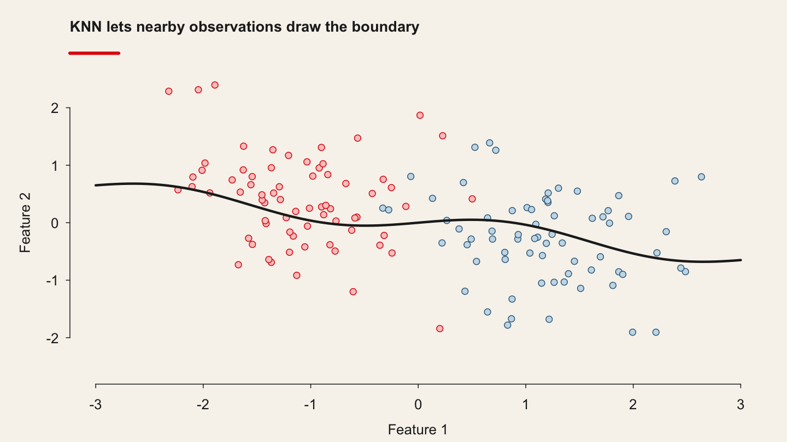
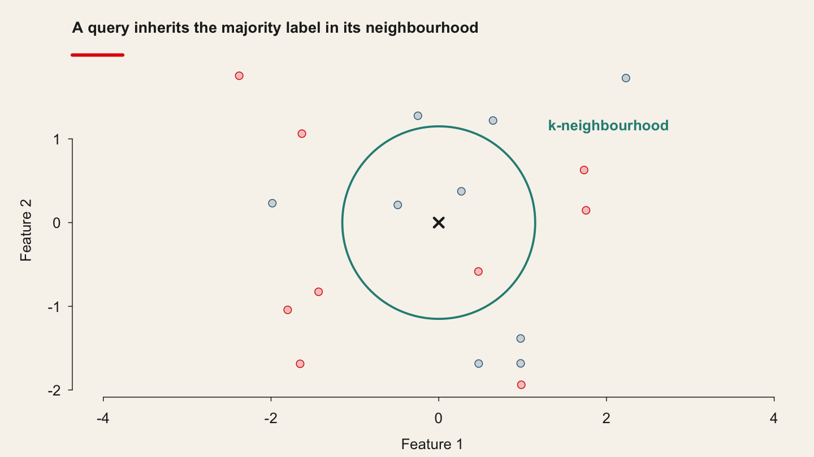
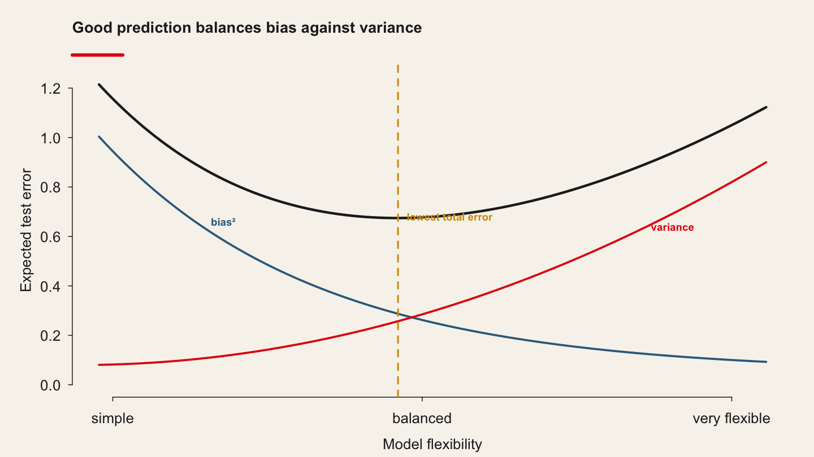
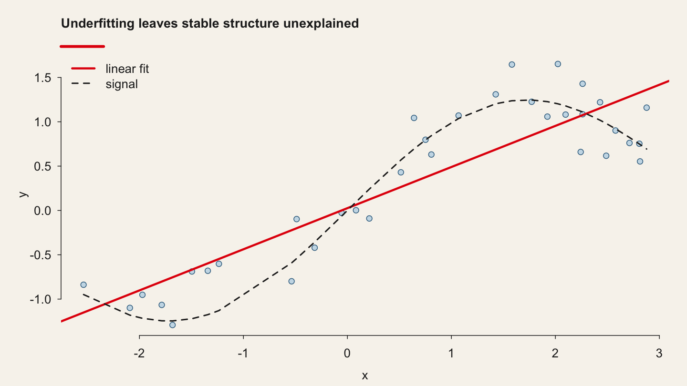
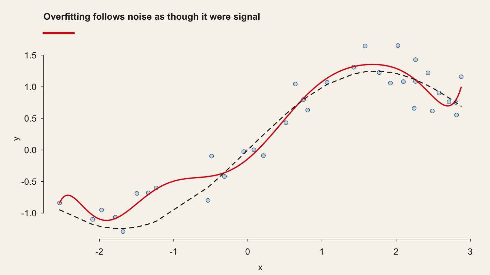
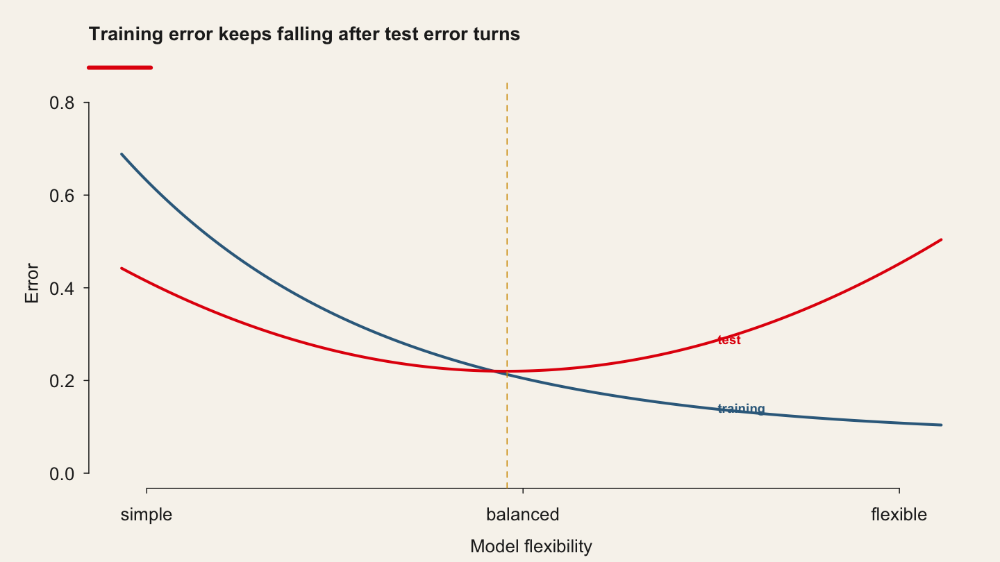
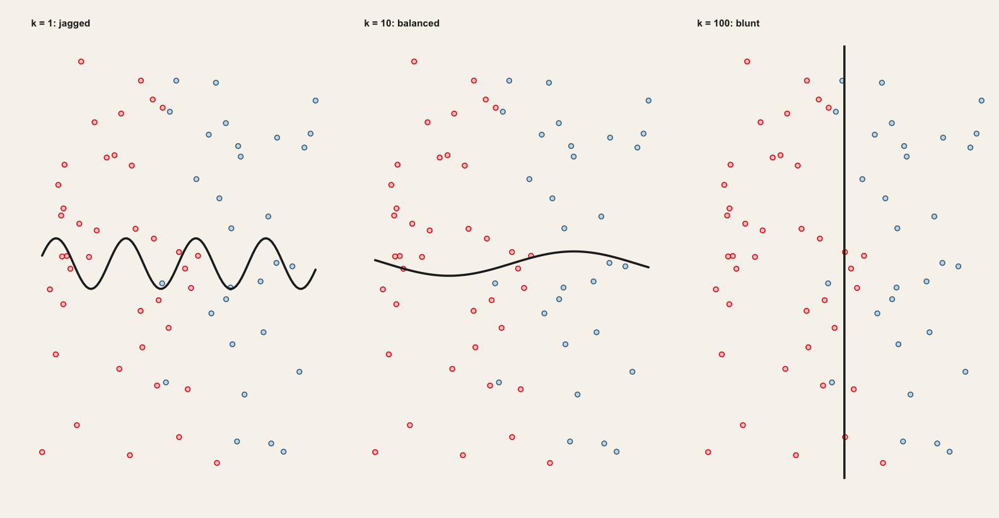
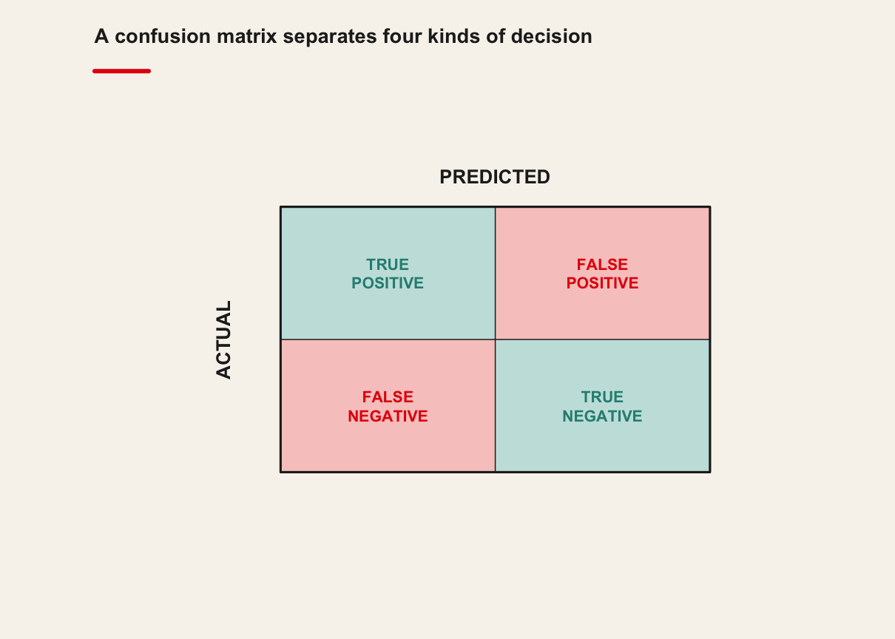
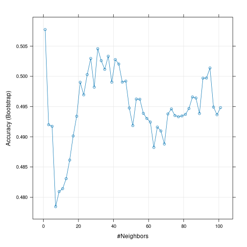

8 K-Nearest Neighbours and the Bias–Variance Trade-off
Flexible, or just unstable?
| Theme of the practice | Does flexibility buy you anything on your own data? |
| Reading | Amsili, van Es & Schindelbeck (2025), Pedotransfer Functions for Soil Protein Based on Random Forest Modeling · article |
| Replication package | 10.7910/DVN/HGBPCW |
| Data | qmib.load("core") — the course spine, plus the Smarket returns used in the lecture |
8.1 Before the session
Flexible, or just unstable?
Open the pre-session slides · source:
MATH60033A-S08-Pre-Session.qmd
Two things to do before class, and they are the two halves of the practice. Budget 60–90 minutes.
| Before class | Used in the practice for | |
|---|---|---|
| 1 | Read the paper | reproducing one of its results |
| 2 | Get both datasets | that, and applying the method to your own angle |
8.1.1 1. The reading — 45–60 min
Amsili, van Es & Schindelbeck (2025), Pedotransfer Functions for Soil Protein Based on Random Forest Modeling Read the article
Read for the argument, not for coverage:
| What to look for | |
|---|---|
| 1 | The research question, in one sentence |
| 2 | The method or design, and why they chose it |
| 3 | The strongest single piece of evidence |
| 4 | One limitation you would raise as a referee |
Annotate as you go. You will be asked what you underlined and why.
8.1.2 2. The data — 10 min
You need two datasets in the practice, and both should be on your machine before you arrive.
8.1.2.1 a) The paper’s replication package
This is what you reproduce in the first twenty minutes of the practice.
Harvard Dataverse: 10.7910/DVN/HGBPCW
Download it once, and unzip it here — the folder is git-ignored, so nothing large is committed:
08-knn-and-bias-variance/data/replication/Keep the authors’ own folder structure and README.
8.1.2.2 b) The course data, for your own angle
This is what you apply the method to in the second half.
import qmib
data = qmib.load("core") # what the lecture uses
core = qmib.load("core") # shared by every group
mine = qmib.load("angle_c_country") # YOUR angle — see your dictionary
print(data.shape, core.shape, mine.shape)The course spine, plus the smarket returns used in the lecture.
Run this before class. It downloads once and caches as parquet, so the practice works whatever the room’s wifi is doing.
qmib.catalog()lists everything available.
Your group’s file, columns, units and traps are in your data dictionary.
8.1.3 3. Self-check — 15 min
Answer on paper. If you cannot, that is what the lecture is for.
- In one sentence: what does this session’s method let you claim that the previous one did not?
- What must be true of your data for it to apply?
- Which claim in the paper rests on this method — and how hard does it lean on it?
8.1.4 Arrive with
8.2 The lecture
Delivered from the slides. What follows is the same material as prose.
"If you live 5 minutes away from Bill Gates, I bet you are rich."
8.3 Bias–Variance Trade-off

8.4 Bias–Variance Trade-off

8.5 Bias–Variance Trade-off

8.6 Bias–Variance Trade-off

8.7 Bias–Variance Trade-off

8.8 Bias–Variance Trade-off

8.9 Classification
Thus far, our discussion of model accuracy has been focused on the regression setting.
But many of the concepts that we have encountered, such as the bias-variance trade-off, transfer over to the classification setting with only some modifications due to the fact that yi is no longer numerical.
Suppose that we seek to estimate f on the basis of training observations (x1,y1),...,(xn,yn), where now y1,...,yn are qualitative.
- The most common approach for quantifying the accuracy of our estimate ˆf is the training error rate, the proportion of mistakes that are made if we apply error rate our estimate ˆf to the training observations ˆf:
1nn∑i=1I(yi≠ˆyi)
Here ˆyi is the predicted class label for the ith observation using ˆf. And I(yi≠ˆyi) is an indicator variable that equals 1 if (yi≠ˆyi) and 0 if (yi=ˆyi).
1nn∑i=1I(yi≠ˆyi)
If I(yi≠ˆyi) = 0 then the ith observation was classified correctly by our variable classification method; otherwise it was misclassified.
Hence this equation computes the fraction of incorrect classifications.
The equation is referred to as the training error rate because it is computed based on the data that was used to train our classifier.
As in the error regression setting, we are most interested in the error rates that result from applying our classifier to test observations that were not used in training.
The test error rate associated with a set of test observations of the form test error (x0,y0) is given by:
Ave(I(y0≠ˆy0))
where ˆy0 is the predicted class label that results from applying the classifier to the test observation with predictor x0. A good classifier is one for which the test error is smallest.
8.10 The Bayes Classifier
It is possible to show that the test error rate given in is minimized, on average, by a very simple classifier that assigns each observation to the most likely class, given its predictor values.
In other words, we should simply assign a test observation with predictor vector x0 to the class j for which:
Pr
is largest.
Note that this equation is a conditional probability: it is the probability conditional that Y = j, given the observed predictor vector x_0.
This very simple classifier is called the Bayes classifier.
In a two-class problem where there are only two possible response values, say class 1 or class 2, the Bayes classifier corresponds to predicting class one if \Pr\left(Y=j\ |\ X\ =x_0\right) > 0.5, and class two otherwise.
A simulated data set consisting of 100 observations in each of two groups, indicated in blue and in orange.
The purple dashed line represents the Bayes decision boundary.
The orange background grid indicates the region in which a test observation will be assigned to the orange class, and the blue background grid indicates the region in which a test observation will be assigned to the blue class.
This figure provides an example using a simulated data set in a two-dimensional space consisting of predictors X_1 and X_2.
"If you live 5 minutes away from Bill Gates, I bet you are rich."
8.11 K-Nearest Neighbors
In theory we would always like to predict qualitative responses using the Bayes classifier.
But for real data, we do not know the conditional distribution of Y given X, and so computing the Bayes classifier is impossible.
Therefore, the Bayes classifier serves as an unattainable gold standard against which to compare other methods.
Many approaches attempt to estimate the conditional distribution of Y given X, and then classify a given observation to the class with highest estimated probability.
One such method is the K-nearest neighbors (KNN) classifier.
Given a positive integer K and a test observation x_0, the KNN classifier first identifies the neighbors K points in the training data that are closest to x_0, represented by N_0.
It then estimates the conditional probability for class j as the fraction of points in N_0 whose response values equal j:
Pr\left(Y=j\ |\ X\ =x_0\right) = \frac{1}{K}\sum_{i∈N_0}I\left(y_i =j\right)
Finally, KNN applies Bayes rule and classifies the test observation x_0 to the class with the largest probability.
Our goal is to make a prediction for the point labeled by the black cross. Suppose that we choose K = 3.
Then KNN will first identify the three observations that are closest to the cross. This neighborhood is shown as a circle.
It consists of two blue points and one orange point, resulting in estimated probabilities of 2/3 for the blue class and 1/3 for the orange class.
Hence KNN will predict that the black cross belongs to the blue class.
Right-hand panel of the figure: we have applied the KNN approach with K = 3 at all of the possible values for X_1 and X_2, and have drawn in the corresponding KNN decision boundary.
Despite the fact that it is a very simple approach, KNN can often produce classifiers that are surprisingly close to the optimal Bayes classifier.
This figure displays the KNN decision boundary, using K = 10, when applied to the larger simulated data set from the first figure.
The Bayes decision boundary is shown as a purple dashed line. The KNN and Bayes decision boundaries are very similar.
The choice of K has a drastic effect on the KNN classifier obtained.
This figure displays two KNN fits to the simulated data , using K = 1 and K = 100. When K = 1, the decision boundary is overly flexible and finds patterns in the data that don’t correspond to the Bayes decision boundary.
This corresponds to a classifier that has low bias but very high variance.
As K grows, the method becomes less flexible and produces a decision boundary that is close to linear.
This corresponds to a low-variance but high-bias classifier.

Just as in the regression setting, there is not a strong relationship between the training error rate and the test error rate. With K = 1, the KNN training error rate is 0, but the test error rate may be quite high.
In general, as we use more flexible classification methods, the training error rate will decline but the test error rate may not.
The KNN training error rate (blue, 200 observations) and test error rate (orange, 5,000 observations) on the data from the first figure, as the level of flexibility (assessed using 1/K) increases.
The black dashed line indicates the Bayes error rate.
The jumpiness of the curves is due to the small size of the training data set.
Choosing the correct level of flexibility is critical to the success of any statistical learning method.
The bias-variance tradeoff, and the resulting U-shape in the test error, can make this a difficult task.
8.12 KNN by hand (you are the algorithm)
The table provides a training data set containing six observations, three predictors, and one qualitative response variable.
Suppose we wish to use this data set to make a prediction for Y when X_1 = X_2 = X_3 = 0 using K-nearest neighbors.
- Compute the Euclidean distance between each observation and the test point, X_1 = X_2 = X_3 = 0.
d(a,b) = d(b,a) = \sqrt{\sum_{i=1}^{p}(a_i - b_i)^2}
| `X_{1}` | `X_{2}` | `X_{3}` | `Y` | |
|---|---|---|---|---|
| 1 | 0 | 3 | 0 | Red |
| 2 | 2 | 0 | 0 | Red |
| 3 | 0 | 1 | 3 | Red |
| 4 | 0 | 1 | 2 | Green |
| 5 | -1 | 0 | 1 | Green |
| 6 | 1 | 1 | 1 | Red |
d(a,b) = d(b,a) = \sqrt{\sum_{i=1}^{p}(a_i - b_i)^2}
# In the VS Codium terminal, with .venv active: python
import numpy as np
# Six observations in three dimensions — we will find the nearest neighbours by hand
obs = np.array([
[0, 3, 0],
[2, 0, 0],
[0, 1, 3],
[0, 1, 2],
[-1, 0, 1],
[1, 1, 1],
])
test = np.array([0, 0, 0])
# Euclidean distance from the test point to each observation
dist = np.sqrt(((obs - test) ** 2).sum(axis=1))
for i, d in enumerate(dist, 1):
print(f"obs{i}: {d:.3f}")| `X_{1}` | `X_{2}` | `X_{3}` | `Y` | `d(X, Z)` | |
|---|---|---|---|---|---|
| 1 | 0 | 3 | 0 | Red | 3.0000 |
| 2 | 2 | 0 | 0 | Red | 2.0000 |
| 3 | 0 | 1 | 3 | Red | 3.1623 |
| 4 | 0 | 1 | 2 | Green | 2.2361 |
| 5 | -1 | 0 | 1 | Green | 1.4142 |
| 6 | 1 | 1 | 1 | Red | 1.7321 |
8.13 KNN by hand
- What is our prediction with K = 1? Why?
Green, since the single nearest neighbor to Z is observation 5.
| `X_{1}` | `X_{2}` | `X_{3}` | `Y` | `d(X, Z)` | |
|---|---|---|---|---|---|
| 1 | 0 | 3 | 0 | Red | 3 |
| 2 | 2 | 0 | 0 | Red | 2 |
| 3 | 0 | 1 | 3 | Red | 3.1623 |
| 4 | 0 | 1 | 2 | Green | 2.2361 |
| 5 | -1 | 0 | 1 | [Green]{style=” font-weight: bold; border-radius: 4px; padding-right: 4px; padding-left: 4px; background-color: lightgreen !important;“} | [1.4142]{style=” font-weight: bold; border-radius: 4px; padding-right: 4px; padding-left: 4px; background-color: lightgreen !important;“} |
| 6 | 1 | 1 | 1 | Red | 1.7321 |
8.14 KNN by hand
- What is our prediction with K = 3? Why?
Red, since the three nearest neighbors to Z are observations 5, 6 and 2; two are “Red”.
| `X_{1}` | `X_{2}` | `X_{3}` | `Y` | `d(X, Z)` | |
|---|---|---|---|---|---|
| 1 | 0 | 3 | 0 | Red | 3 |
| 2 | 2 | 0 | 0 | [Red]{style=” font-weight: bold; border-radius: 4px; padding-right: 4px; padding-left: 4px; background-color: lightgreen !important;“} | [2]{style=” font-weight: bold; border-radius: 4px; padding-right: 4px; padding-left: 4px; background-color: lightgreen !important;“} |
| 3 | 0 | 1 | 3 | Red | 3.1623 |
| 4 | 0 | 1 | 2 | Green | 2.2361 |
| 5 | -1 | 0 | 1 | [Green]{style=” font-weight: bold; border-radius: 4px; padding-right: 4px; padding-left: 4px; background-color: lightgreen !important;“} | [1.4142]{style=” font-weight: bold; border-radius: 4px; padding-right: 4px; padding-left: 4px; background-color: lightgreen !important;“} |
| 6 | 1 | 1 | 1 | [Red]{style=” font-weight: bold; border-radius: 4px; padding-right: 4px; padding-left: 4px; background-color: lightgreen !important;“} | [1.7321]{style=” font-weight: bold; border-radius: 4px; padding-right: 4px; padding-left: 4px; background-color: lightgreen !important;“} |
8.15 KNN by hand
- If the Bayes decision boundary in this problem is highly nonlinear, then would we expect the best value for K to be large or small? Why?
Solution
We would expect a small K to perform better for a nonlinear decision boundary. A small `K` would be more ‘flexible’ and the KNN boundary would be pulled in different directions easier, whereas a large K would have a ‘smoothing’ effect and produce a more linear boundary (hence, a worse classifier), because it takes more points into account.
8.16 KNN in R code (you are not longer the algorithm)
8.17 Machine Learning: using KNN as an example
- How does an AI work?
The KNN mathematics, now integrated in an algorithm, what does it change?
8.18 Machine Learning: using KNN as an example
import pandas as pd
# Smarket: 1,250 daily S&P 500 returns. ISLR ships it as a CSV.
Smarket = pd.read_csv(
"https://www.statlearning.com/s/Smarket.csv")
Smarket.head()## Year Lag1 Lag2 Lag3 Lag4 Lag5 Volume Today Direction
## 1 2001 0.381 -0.192 -2.624 -1.055 5.010 1.1913 0.959 Up
## 2 2001 0.959 0.381 -0.192 -2.624 -1.055 1.2965 1.032 Up
## 3 2001 1.032 0.959 0.381 -0.192 -2.624 1.4112 -0.623 Down
## 4 2001 -0.623 1.032 0.959 0.381 -0.192 1.2760 0.614 Up
## 5 2001 0.614 -0.623 1.032 0.959 0.381 1.2057 0.213 Up
## 6 2001 0.213 0.614 -0.623 1.032 0.959 1.3491 1.392 UpWe have a labeled dataset here about the stock market. A data frame with 1250 observations on the following 9 variables.
| Variable | Description |
|---|---|
| Year | The year that the observation was recorded |
| Lag_1 | Percentage return for previous day |
| Lag_2 | Percentage return for 2 days previous |
| Lag_n | Percentage return for n days previous |
| Direction | A factor with levels Down and Up indicating whether the market had a positive or negative return on a given day |
Pre-processing means that we will create the train and the test datasets (they will be called train and test). We also need to consider a variable with the labeled value, here "Direction" (it is a factor with the "up" and "down" values).
We will now perform KNN.
A matrix containing the predictors associated with the training data, labeled
trainbelow.A matrix containing the predictors associated with the data for which we wish to make predictions, labeled
testbelow.A vector containing the class labels for the training observations, labeled
Directionbelow.A value for K, the number of nearest neighbors to be used by the classifier (will be determined automatically).

Based on the above confusion matrix, we can calculate the following values and prepare for plotting the ROC curve.
Accuracy = \frac{TP+TN}{TP+FP+TN+FN}
TPR / Recall / Sensitivity = \frac{TP}{TP+FN}
Precision = \frac{TP}{TP+FP}
Specificity = \frac{TN}{TN+FP}
False~Postitive~Rate = 1 — Specificity = \frac{FP}{TN+FP}
F1~Score =\frac{2*TP}{2*TP+FP+FN}= (Precision * Recall) / (Precision + Recall)
Scaling/normalization:
x_{normalized} = \frac{x - x_{min}}{x_{max} - x_{min}}
Centering/standardization:
x_{standardized} = \frac{x - \mu}{\sigma}
Data collection
Model training with or without cross-validation and pre-processing of data
Model testing
Prediction on user's data
import pandas as pd
Smarket = pd.read_csv("https://www.statlearning.com/s/Smarket.csv")
# Train on everything before 2005, test on 2005 — a time split, not a random one
train = Smarket[Smarket["Year"] < 2005]
test = Smarket[Smarket["Year"] == 2005]
train.head()## Year Lag1 Lag2 Lag3 Lag4 Lag5 Volume Today Direction
## 1 2001 0.381 -0.192 -2.624 -1.055 5.010 1.1913 0.959 Up
## 2 2001 0.959 0.381 -0.192 -2.624 -1.055 1.2965 1.032 Up
## 3 2001 1.032 0.959 0.381 -0.192 -2.624 1.4112 -0.623 Down
## 4 2001 -0.623 1.032 0.959 0.381 -0.192 1.2760 0.614 Up
## 5 2001 0.614 -0.623 1.032 0.959 0.381 1.2057 0.213 Up
## 6 2001 0.213 0.614 -0.623 1.032 0.959 1.3491 1.392 Upfrom sklearn.neighbors import KNeighborsClassifier
from sklearn.model_selection import GridSearchCV
from sklearn.pipeline import make_pipeline
from sklearn.preprocessing import StandardScaler
train = Smarket[Smarket["Year"] < 2005]
test_set = Smarket[Smarket["Year"] == 2005]
X_tr, y_tr = train[["Lag1", "Lag2"]], train["Direction"]
# KNN needs standardised inputs: distance is meaningless in mixed units.
pipe = make_pipeline(StandardScaler(), KNeighborsClassifier())
grid = GridSearchCV(pipe, {"kneighborsclassifier__n_neighbors": range(1, 26)}, cv=5)
modelknn = grid.fit(X_tr, y_tr)or with k-fold cross-validation:
from sklearn.neighbors import KNeighborsClassifier
from sklearn.model_selection import GridSearchCV
from sklearn.pipeline import make_pipeline
from sklearn.preprocessing import StandardScaler
X_tr, y_tr = train[["Lag1", "Lag2"]], train["Direction"]
# StandardScaler inside the pipeline, so it is refitted in every CV fold
modelknn = GridSearchCV(
make_pipeline(StandardScaler(), KNeighborsClassifier()),
{"kneighborsclassifier__n_neighbors": range(1, 102, 2)},
cv=3).fit(X_tr, y_tr)
print(modelknn.best_params_, round(modelknn.best_score_, 4))## k-Nearest Neighbors
##
## 998 samples
## 2 predictor
## 2 classes: 'Down', 'Up'
##
## Pre-processing: centered (2), scaled (2)
## Resampling: Bootstrapped (25 reps)
## Summary of sample sizes: 998, 998, 998, 998, 998, 998, ...
## Resampling results across tuning parameters:
##
## k Accuracy Kappa
## 1 0.5077431 1.599383e-02
## 3 0.4919940 -1.512538e-02
## 5 0.4917264 -1.577724e-02
## 7 0.4784333 -4.190927e-02
## 9 0.4809359 -3.675615e-02
## 11 0.4814100 -3.579917e-02
## 13 0.4830695 -3.260827e-02
## 15 0.4861415 -2.581052e-02
## 17 0.4901345 -1.755719e-02
## 19 0.4933934 -1.116671e-02
## 21 0.4990181 2.010178e-05
## 23 0.4969327 -4.049311e-03
## 25 0.5002967 2.613570e-03
## 27 0.5029592 7.997583e-03
## 29 0.4982065 -1.298930e-03
## 31 0.5045753 1.167676e-02
## 33 0.5025924 7.565307e-03
## 35 0.5011583 4.917095e-03
## 37 0.5033302 9.090351e-03
## 39 0.4990326 7.128709e-04
## 41 0.5027772 7.862683e-03
## 43 0.5020358 6.557758e-03
## 45 0.4990432 5.371903e-04
## 47 0.4992148 8.371058e-04
## 49 0.4947610 -7.758225e-03
## 51 0.4918414 -1.356142e-02
## 53 0.4962420 -4.504979e-03
## 55 0.4962089 -4.540006e-03
## 57 0.4938731 -9.126126e-03
## 59 0.4930313 -1.098474e-02
## 61 0.4924355 -1.204873e-02
## 63 0.4882357 -2.030122e-02
## 65 0.4916030 -1.348158e-02
## 67 0.4909612 -1.493990e-02
## 69 0.4887982 -1.894524e-02
## 71 0.4937787 -9.054955e-03
## 73 0.4946094 -7.184378e-03
## 75 0.4935163 -9.257376e-03
## 77 0.4933196 -9.723898e-03
## 79 0.4934470 -9.291803e-03
## 81 0.4937045 -9.057264e-03
## 83 0.4946732 -7.218470e-03
## 85 0.4965836 -3.461526e-03
## 87 0.4964156 -3.797219e-03
## 89 0.4938407 -8.835032e-03
## 91 0.4997053 2.765046e-03
## 93 0.4997206 2.993713e-03
## 95 0.5013862 6.431938e-03
## 97 0.4949097 -6.424768e-03
## 99 0.4936504 -9.192792e-03
## 101 0.4948240 -6.543159e-03
##
## Accuracy was used to select the optimal model using the largest value.
## The final value used for the model was k = 1.import matplotlib.pyplot as plt
k_values = range(1, 26)
scores = modelknn.cv_results_["mean_test_score"]
plt.plot(k_values, scores, "o-")
plt.xlabel("k (number of neighbours)"); plt.ylabel("CV accuracy")
plt.show()
Best tuning:
modelknn.best_params_## k
## 1 1Variable importance?
from sklearn.inspection import permutation_importance
# KNN has no coefficients — importance is measured by scrambling a column
imp = permutation_importance(modelknn, X_tr, y_tr, n_repeats=10, random_state=0)
for name, m in zip(X_tr.columns, imp.importances_mean):
print(f"{name}: {m:.4f}")## ROC curve variable importance
##
## Importance
## Lag1 100
## Lag2 0Let us predict the Direction, and see what it does predict indeed.
X_te, y_te = test[["Lag1", "Lag2"]], test["Direction"]
knn_predict = modelknn.predict(X_te)
df_knn_predict = test.assign(knnPredict=knn_predict)
df_knn_predict["Direction"].head()## [1] Down Down Down Up Down Up
## Levels: Down Upknn_predict = modelknn.predict(test_set[["Lag1", "Lag2"]])
knn_predict[:6]## [1] Down Down Up Up Down Up
## Levels: Down UpSince we have the actual labels with in the test$Direction variable for the test dataset, we will be able to check the performance of the prediction on the test dataset. Let's produce the confusion matrix based on the optimal parameters from the knnfit with the new dataset called test_final:
from sklearn.metrics import confusion_matrix, classification_report
# The confusion matrix, and the accuracy that goes with it
print(confusion_matrix(y_te, knn_predict))
print(classification_report(y_te, knn_predict))## Confusion Matrix and Statistics
##
## Reference
## Prediction Down Up
## Down 43 60
## Up 68 81
##
## Accuracy : 0.4921
## 95% CI : (0.4288, 0.5555)
## No Information Rate : 0.5595
## P-Value [Acc > NIR] : 0.9866
##
## Kappa : -0.0384
##
## Mcnemar's Test P-Value : 0.5361
##
## Sensitivity : 0.3874
## Specificity : 0.5745
## Pos Pred Value : 0.4175
## Neg Pred Value : 0.5436
## Prevalence : 0.4405
## Detection Rate : 0.1706
## Detection Prevalence : 0.4087
## Balanced Accuracy : 0.4809
##
## 'Positive' Class : Down
##Here we will perform a point estimate prediction. You can use your own features to see what the model will predict...
import pandas as pd
from sklearn.neighbors import KNeighborsClassifier
from sklearn.model_selection import GridSearchCV
from sklearn.pipeline import make_pipeline
from sklearn.preprocessing import StandardScaler
Smarket = pd.read_csv("https://www.statlearning.com/s/Smarket.csv")
train = Smarket[Smarket["Year"] < 2005]
test = Smarket[Smarket["Year"] == 2005]
modelknn = GridSearchCV(
make_pipeline(StandardScaler(), KNeighborsClassifier()),
{"kneighborsclassifier__n_neighbors": range(1, 102, 2)},
cv=3).fit(train[["Lag1", "Lag2"]], train["Direction"])## Lag1 Lag2
## 1 -0.134 0.008
## knnPredict2
## 1 DownYou survived your second session on Machine Learning! Congrats!
You survived your second session on Machine Learning! Congrats!
Wait! I am not an expert! I will never be!!!
I only know the K-Nearest-Neighbor classification technique!!!
You survived your second session on Machine Learning! Congrats!
Wait! I am not an expert! I will never be!!!
I only know the K-Nearest-Neighbor classification technique!!!
OK, let's step back first...
8.19 Big lessons from ML
8.20 Big lessons
Machine Learning is about:
regressions
classifications
Machine Learning is about:
- a process: the 7 principles of ML (see the previous session)
You can run the lm(), glm(), plm() in the context of ML: k-fold cross validation, training/testing, predictions
ML aims at:
reducing the model and data biases in sampling with regards to the populations
as such, it is a GIGANTIC improvement of current quantitative studies
# Classification example: the iris data, which ships with scikit-learn
from sklearn.datasets import load_iris
iris = load_iris(as_frame=True)
TrainData, TrainClasses = iris.data, iris.target
knn_iris = GridSearchCV(
make_pipeline(StandardScaler(), KNeighborsClassifier()),
{"kneighborsclassifier__n_neighbors": range(1, 16)}, cv=10).fit(TrainData, TrainClasses)
print(f"best k = {knn_iris.best_params_}, accuracy = {knn_iris.best_score_:.3f}")# Regression example: California housing replaces the retired Boston data,
# which was withdrawn over an ethically problematic variable.
from sklearn.datasets import fetch_california_housing
from sklearn.neighbors import KNeighborsRegressor
from sklearn.model_selection import cross_val_score
housing = fetch_california_housing(as_frame=True)
X, y = housing.data, housing.target
knn_reg = make_pipeline(StandardScaler(), KNeighborsRegressor(n_neighbors=5))
rmse = -cross_val_score(knn_reg, X[:2000], y[:2000], cv=5,
scoring="neg_root_mean_squared_error").mean()
print(f"KNN regression RMSE = {rmse:.3f}")# scikit-learn parallelises with n_jobs — no cluster setup required.
knn_par = GridSearchCV(
make_pipeline(StandardScaler(), KNeighborsClassifier()),
{"kneighborsclassifier__n_neighbors": range(1, 26)},
cv=5, n_jobs=-1).fit(X_tr, y_tr)
print(f"best k = {knn_par.best_params_}")# A random forest, also parallelised, for comparison with KNN
from sklearn.ensemble import RandomForestClassifier
rf = RandomForestClassifier(n_estimators=500, n_jobs=-1, random_state=0)
print(f"forest CV accuracy = {cross_val_score(rf, X_tr, y_tr, cv=5).mean():.3f}")8.21 In the practice
8.21.1 K-Nearest Neighbours and the Bias–Variance Trade-off
Open the practice slides · source:
MATH60033A-S08-Practice.qmd
8.21.1.1 The theme of this session
9 Does flexibility buy you anything on your own data?
All ten groups attack this question, each on its own project, and the last twenty minutes assemble the answers.
9.0.0.1 What you are doing
The lecture showed the method on the session’s dataset. You now apply it to your own angle, and to the question your group is actually trying to answer (RESEARCH-MANDATES.md).
The deliverable is not a printout. It is a decision, with the reason written down.
9.0.0.2 Before you start
Everyone in the group pushes at least once this session. Replace XX with your group number — group 07 uses group-07.
git checkout -b group-XX
mkdir -p 08-knn-and-bias-variance/02-practice/submissions/group-XX9.0.0.3 1 · Reproduce one result from the paper — 20 min
Take the result the pre-session reading rests on, and reproduce it — or establish that you cannot, and say precisely where it breaks. A failed reproduction that is diagnosed earns full marks; one that is not attempted earns none.
The paper is Amsili, van Es & Schindelbeck (2025), Pedotransfer Functions for Soil Protein Based on Random Forest Modeling, and its replication package (10.7910/DVN/HGBPCW) should already be unzipped at:
08-knn-and-bias-variance/data/replication/The session’s own dataset, for comparison:
import qmib
data = qmib.load("core")9.0.0.4 2 · Apply the method to your own angle — 35 min
core = qmib.load("core")
mine = qmib.load("angle_c_country") # your angle — see your dictionary
df = core.merge(mine, on=["geo", "time"], how="inner")Fit the session’s method on your own data. Report what the lecture said to report, in the units of your own variables.
9.0.0.5 3 · Break one assumption — 15 min
Every method in this course rests on something. Find the assumption this one rests on hardest, break it deliberately, and record what happened to your answer. This is the part that carries the marks.
9.0.0.6 4 · Write it down — 20 min
A 250-word note in your submissions folder:
- What you found, in units
- Which assumption you broke, and what it did
- What this result does not license you to claim
9.0.0.7 Submitting
git add 08-knn-and-bias-variance/02-practice/submissions/group-XX
git commit -m "Session 08 practice — group XX"
git push -u origin group-XXEveryone pushes at least once. The log is the record of participation.
9.0.0.8 What loses marks
- Running KNN on unstandardised predictors
- Choosing \(k\) on the test set
- Reporting accuracy with no benchmark
- Treating a low training error as evidence of anything